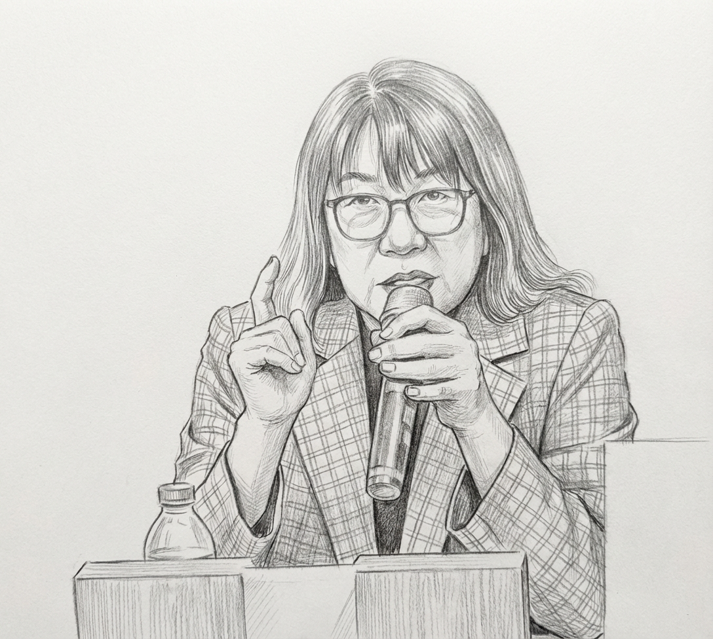
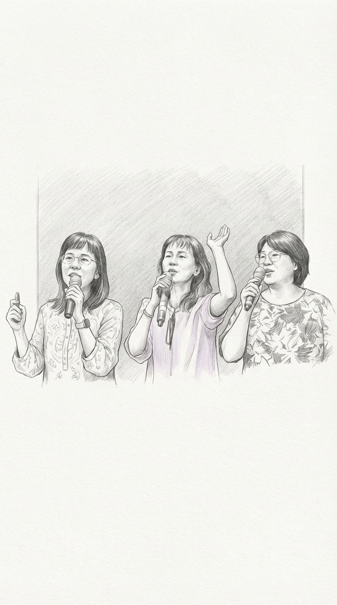
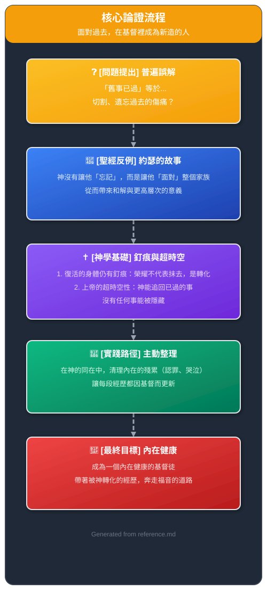
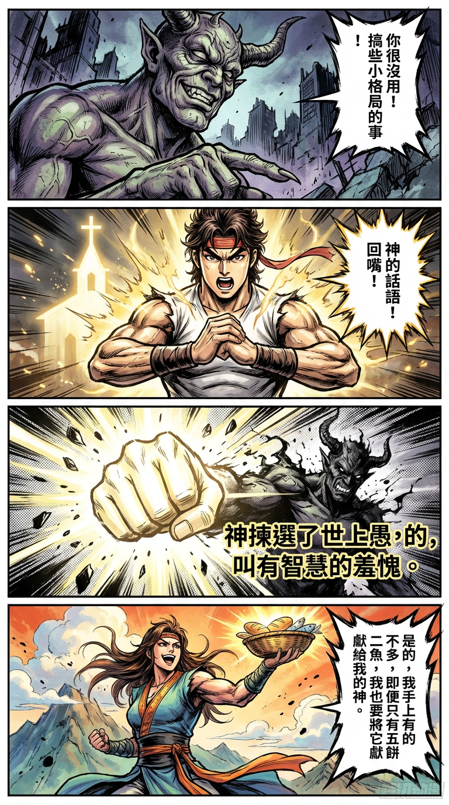
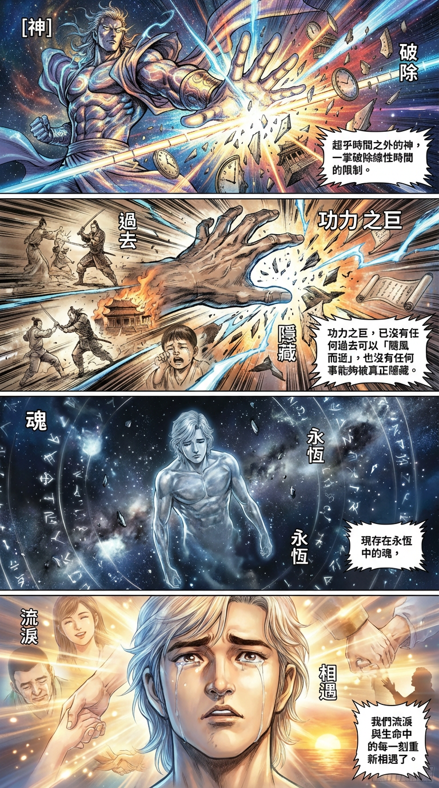
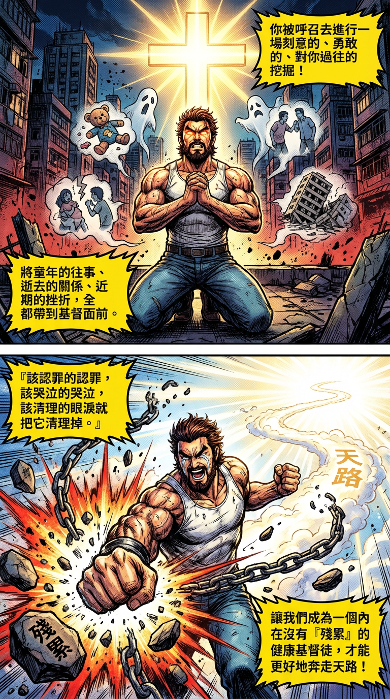

在基督里重塑我们的过去
舊事已過，如何真正「都變成新的了」？

1.0 講道主題與總結
1.1 前言：設定上下文
弟兄姊妹平安。感謝教會的邀請，也感謝神，讓我定下一個決心——在未來的分享和講道風格中，要更多地帶入自己的見證。這個轉變，源於上週感恩節期間，我在美國加州的一個家庭營會中服事。當時，時間很緊湊，但我仍在分享信息的過程中，穿插了一段個人的屬靈經歷。聚會結束後，有一位姊妹上前來，眼裡含著淚對我說：「陳老師，你一定要這樣做。你剛才分享見證的時候，我感覺心中被重重一擊，眼淚就開始流。」她轉頭看見身旁的先生，發現他也在流淚。這番話給了我極大的肯定，讓我深刻體會到，主觀的生命經歷在傳遞神的話語時，擁有何等深刻且觸動人心的力量。因此，今天我想用一份更坦誠、更具個人溫度的分享，與大家一同探討一個我們都必須面對的課題。

1.2 核心論點與要訣
本次信息旨在深入探討哥林多後書5章17節——「若有人在基督裡，他就是新造的人，舊事已過，都變成新的了。」我們將會發現，真正的「忘記背後」並非壓抑情感或切割過往，而是必須先在基督的光中「勇敢面對」，才能獲得從神而來的新眼光、新心境與新醫治，使那些「舊事」在祂手中，真正地「變成新的」。
以下是本次信息的三個關鍵要訣：
- 要訣一：重新定義「忘記」 聖經的「忘記」不是刪除記憶，而是解除其權柄。它是在基督裡徹底處理傷痛，直到它再也無法定義你、捆綁你。
- 要訣二：辨識家庭系統中的隱藏傷痕 跳脫個人視角，看見整個家庭系統的創傷。神要醫治的不是孤立的受害者，而是破碎的關係網，這其中也包括那些「受傷的加害者」。
- 要訣三：擁抱上帝的「超時空」視角 神不受限於線性時間，祂能「追回已過的事」。明白這一點，能幫助我們放棄隱藏和遮掩，坦然地將生命中所有的經歷，都帶到祂的面前來整理和更新。

2.0 論點綱要卡片

3.0 論點深度闡述與生命見證
3.1 導論：從個人掙扎到講台信息的轉變
最近在編寫一套教案時，我經歷了一場劇烈的屬靈爭戰。魔鬼不斷地用一些意念來攻擊我，告訴我「你很沒用」、「你只會搞一些小格局的事情」、「看看你的同學同事，他們都是國際級學者，在頂尖期刊上發表論文，而你一篇都沒有」。面對這些攻擊，我學會了用神的話語「回嘴」。我對那聲音說：「神揀選了世上愚拙的，叫有智慧的羞愧。」我又說：「是的，我手上有的不多，即便只有五餅二魚，我也要將它獻給我的神。」當我用這兩處真理回應時，那攻擊的聲音就消退了。

這個經歷，讓我再次深思「舊事已過，都變成新的了」這節經文的真正涵義。我們生命中那些「舊的」聲音、傷痕與記憶，究竟該如何處理？它們真的會因為我們信主就自動「變成新的」嗎？今天，我將透過個人生命中的掙扎與見證，與大家一同深入探討這個主題。這不僅是一次神學分析，這更是對一種流行卻危險的錯誤觀念，一次基於聖經的「回嘴」。首先，就讓我們從這個普遍存在的迷思開始。
3.2 破除迷思：對「忘記過去」的常見誤解
在基督徒圈子裡，我們常常聽到「忘記背後，努力面前」的教導，並將其與「舊事已過」連結，形成一種普遍的誤解：信主後，就應該切割過去，不再提起傷心事。
我記得多年前，讀到一本當時很流行的書籍（類似《疾風烈火》），書中作者提到他如何勸勉一位前來求助的姊妹。他告訴那位姊妹，因為「舊事已過」，所以她不應該再和家人談論過去的舊帳。為了支持這個論點，作者還引用了約瑟為長子取名「瑪拿西」（意為「神使之忘」）的例子，主張這就是聖經教導我們要「忘記過去」的典範。
當我讀到這段時，我必須說，我嚇死了。這與我一直以來所持守的信念——鼓勵人們必須去「整理過去」，才能全人跟隨神——完全背道而馳。當我讀到這裡，我的心為教會裡許多被這樣教導的弟兄姊妹感到憂心。這個矛盾驅使我重新回到聖經，仔細查考約瑟的故事。是的，約瑟確實想忘記，但上帝的作為卻截然相反。聖經的事實是，上帝最終把約瑟的「全家」都帶到了他的面前，要求他去面對。
那麼，聖經的真理究竟是什麼？
3.3 核心案例分析：約瑟家族的集體創傷
要理解上帝的作為，我們必須意識到，約瑟的故事不僅是他個人的悲劇，更是一個家庭系統性的集體創傷。
3.3.1 上帝的計畫 vs. 約瑟的願望
約瑟為長子取名「瑪拿西」，清楚地揭示了他內心深處的願望——他想忘記這一切痛苦，忘記他父親的全家。然而，上帝的計畫卻與他的個人願望相反。神非但沒有讓他忘記，反而精心安排了一場家族重逢，迫使他必須面對那段最不堪回首的過去。這清楚地表明，上帝的醫治之道並非遺忘，而是在關係的和解與神的旨意中，看見那超越傷痛的更高層次的美意。
3.3.2 受傷的加害者與家庭動力
在這場家庭悲劇中，受傷的不僅是約瑟。這不是理論，我在輔導中看過太多真實的傷痛。我們必須看見每個角色的傷痛：
- 約瑟： 承受了被至親出賣、被遺棄的雙重創傷。
- 父親雅各： 經歷了白髮人送黑髮人的喪子之痛。
- 弟弟便雅憫： 在年幼時失去了摯愛的長兄，活在死亡陰影所帶來的憂慮與恐懼中。
- 哥哥們： 他們常被視為單純的加害者，但他們的極端行為，源於父親長期偏愛約瑟所導致的「失寵」。這種手足間的不公對待，本身就是一種嚴重的心理創傷。
我在大學教書時，曾遇過各種因手足過於優秀而罹患憂鬱症的學生，無論是哥哥、姊姊、弟弟還是妹妹，四種組合我都見過。這讓我深刻體會到，家庭中因不公對待所造成的傷害是何等真實與沉重。哥哥們，正是在這樣一個受傷的狀態下，犯下了大錯。
3.3.3 傷痛的共鳴
為了讓大家更深地體會這種創傷，我想分享兩個個人見證：
- 喪親之痛： 我大姐的獨子，也就是我的外甥，在大約21或22歲那年因車禍過世，出殯那天正好是父親節。我永遠忘不了儀式結束後的一幕。當所有親友都聚集在一樓時，我看到大姐和大姐夫默默地走上二樓，再走到三樓的家庭工廠倉庫。在那裡，他們兩人背對著背，卻在同一時間放聲大哭。 那哭聲至今仍在我耳邊迴盪，讓我稍微能夠體會雅各失去愛子時那種錐心之痛，那種旁人無法安慰的絕望。
- 離家之苦： 我在政大教書時，曾關懷過一位來自澎湖的大一新生。我注意到他連續幾週上課都面帶愁容，望向窗外。下課後我關心地問他，他才吐露心聲：「想家。」一個18歲的年輕人，只是從離島來到本島讀書，思鄉之情就已如此濃烈。以此為對比，我們才能稍微想像，約瑟在17歲時，不是光榮離家，而是被親兄弟賣為奴隸，遠赴異國他鄉，那份創傷是何等巨大！
上帝之所以要這個傷痕累累的家庭重聚，正是因為祂的醫治是全備的。祂要醫治每一個人——無論是受害者約瑟，還是那些同時身為加害者與受傷者的哥哥們。
3.4 神學框架：在基督裡找到新意義
要處理如此深沉的過往，我們需要一個穩固的神學框架。
3.4.1 「在基督裡」是更新的前提
經文的關鍵前提是「若有人在基督裡」。這句話是一切更新的基礎。唯有「在基督裡」，我們才能：
- 獲得看待過去的「新眼光」。
- 獲得處理情緒的「新心境」。
- 從苦難中發掘「新的意義」。
創世記45章5節，約瑟對哥哥們說：「現在，不要因為把我賣到這裡自憂自恨。這是上帝差我在你們以先來，為要保全生命。」這句話，就是約瑟在經歷了面對、痛哭與和解後，在神的啟示下所獲得的全新視野，是「在基督裡」看見新意義的最佳典範。
3.4.2 上帝的超時空視角
《傳道書》為我們揭示了上帝的時間觀。經文說：「神使已過的事重新再來（或譯：追回已過的事）」，並且「因為人所做的事，連一切隱藏的事……神都必審問。」
這告訴我們，神是「timeless」（超乎時間之外）的，祂不受我們線性時間的限制。對祂而言，沒有任何過去可以「隨風而逝」，也沒有任何事能夠被真正隱藏。這也構成了我們必須誠實整理過去的神學基礎，因為在永恆中，我們終將與生命中的每一刻重新相遇。

3.4.3 主觀經歷中的「進出」
客觀真理上，神與我們同在，祂從未離開。但在主觀經歷上，我們卻時常「進出」神的同在感，有時會忘記祂就在我們裡面。因此，我們需要有意識地、時時刻刻地操練自己活在「基督裡」，尤其是在回看和整理生命過往的那些艱難時刻。
3.5 實踐之道：如何真正地「忘記」
那麼，我們該如何將這些神學真理應用在生命中呢？
3.5.1 面對是饒恕的開始
饒恕，從來都不是一件容易的事。我自己曾有一段深刻的經歷：我所帶領的一個小組長，後來帶著整個小組宣布獨立，脫離我們的牧養。而那個小組長他們全家，是我帶信主的。 那種「被出賣」的感覺，雖然只是教會裡的一個小波瀾，卻讓我在心裡默默地走了整整十年才真正走過。
我必須坦誠，在那十年裡，每當我在講台上聽到「饒恕」這兩個字時，我內心都會感到很生氣。這個見證是要說明，真正的饒恕，絕不是壓抑感覺或假裝沒事，而是一個漫長且需要誠實面對內心傷痛的過程。你必須先承認你的痛、你的怒，才能開始走向真正的釋放。
3.5.2 清理內在的殘累
我在此要提出一個具體的行動呼籲：這不是一個溫柔的建議，而是一項屬靈的緊急命令。你被呼召去進行一場刻意的、勇敢的、對你過往的挖掘。將童年的往事、逝去的關係、近期的挫折，全都帶到基督面前。「該認罪的認罪，該哭泣的哭泣，該清理的眼淚就把它清理掉。」 讓我們成為一個內在沒有「殘累」的健康基督徒，才能更好地奔走天路。

記得約瑟與兄弟們相認時，他「放聲大哭」，那哭聲大到連法老的家都聽見了。約瑟的哭聲不是軟弱的標記，而是響徹王宮的、深刻的醫治行動。這是聖經給你的許可，讓你可以同樣誠實地面對自己的傷痛，給它一個聲音，一個大到足以劃破你長久以來用以禁錮它的沉默的聲音。
面對過去，清理內在的殘累，就像是清除電腦系統中的病毒和垃圾檔案。只有徹底清除和修復了底層的錯誤代碼（過去的傷痛和未解的疑惑），系統（我們的生命）才能以新的、健康的方式運行，並順利執行下一步的任務（奔走福音的道路）。
3.5.3 永無止境的「然後呢？」
我常說自己是個「認真的基督徒」，因為我誠實到有時人家會受不了，也因為我心裡總有一個聲音在追問：「and then?（然後呢？）」這個 relentless 的「然後呢？」，是一個健康基督徒生命的脈搏，一種對福音的急迫感。但一顆被過往「殘累」所充斥的心，是無法帶著這種急迫感跳動的。若不清掃，你的「然後」將永遠被你的「從前」所綑綁。當我們清除了過往的纏累與重擔，我們的生命才能輕省，才能不斷地思考「下一步該怎麼做」，將我們被神轉化的經歷，化為祝福他人的動力。
4.0 信息要點逐字稿整理
| 綜合論述 |
|---|
| 開場與動機： 講員分享決定在講道中加入更多個人見證的轉捩點，並提及在美國服事時得到的正面反饋。引入主題，探討對「舊事已過」的普遍誤解。 |
| 個人屬靈爭戰見證： 講述在編寫教案時，遭受魔鬼關於「無用感」的思想攻擊，以及如何用聖經真理「回嘴」得勝的經歷。 |
| 破除錯誤教導： 批判將「忘記過去」等同於「不再提起」的流行觀念，並以某本書錯誤詮釋約瑟的故事為例，引發對聖經真理的重新探尋。 |
| 約瑟家的創傷分析 (1) - 多方視角： 深入分析約瑟家庭悲劇中的多重受害者：約瑟（被賣）、雅各（喪子）、便雅憫（恐懼）以及哥哥們（因偏愛而失寵）。 |
| 見證 (1) - 喪親之痛： 分享外甥車禍過世後，目睹大姐與大姐夫在倉庫中同時放聲大哭的場景，以共情雅各的傷痛。 |
| 見證 (2) - 離家之苦： 透過關懷一位來自澎湖的想家新生，來對比和突顯約瑟17歲被賣為奴的巨大創傷。 |
| 核心神學 (1) - 「在基督裡」： 闡明「在基督裡」是獲得新眼光、新心境和新意義的前提，並引用約瑟與弟兄和解時的話語作為例證。 |
| 核心神學 (2) - 上帝的時間觀： 根據《傳道書》解釋神不受時間限制，能「追回已過的事」，因此我們無法真正逃避或隱藏過去。 |
| 饒恕的漫長之路見證： 分享因被自己帶信主的同工背叛而花了十年才真正饒恕的個人歷程，說明饒恕的艱難與真實性，並非一句口號。 |
| 呼召與實踐： 呼籲會眾要有意識地、在基督裡去整理過往，清理內在殘累，並引用約瑟「放聲大哭」的例子，鼓勵情感的真實表達。 |
| 總結與展望： 以個人不斷追問「然後呢？」的特質作結，鼓勵信徒在潔淨內心後，帶著對福音的急迫感，奔走前面的道路。 |
5.0 結束的禱告
親愛的天父，我們感謝祢透過祢的話語向我們啟示，讓我們明白，面對過去不是停滯不前，而是邁向真正自由的開始。主啊，此刻我為每一位弟兄姊妹禱告。求祢賜下勇氣，讓我們願意在祢的愛與同在中，回去審視自己生命中的種種經歷——無論是那些我們引以為傲的，還是那些我們深埋心底、不敢觸碰的。
主聖靈，我們邀請祢來引導這個過程。求祢光照我們，讓我們看見那些需要被處理的傷痛、需要被承認的罪、以及需要被釋放的眼淚。主啊，我們宣告，所有在我們生命中的「舊事」，都要「在基督裡」被祢轉化，成為新的眼光、新的心境和新的意義。求祢使我們最終能以一個更完整、更健康的生命來跟隨祢，奔跑祢為我們預備的道路。
奉主耶穌基督得勝的名禱告，阿們。